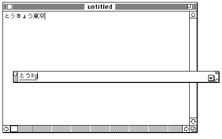
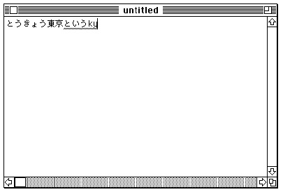
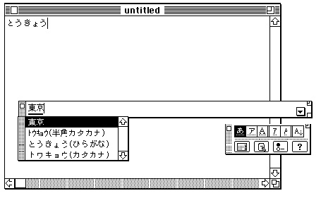

Legacy Document
Important: The information in this document is obsolete and should not be used for new development.
Important: The information in this document is obsolete and should not be used for new development.


About Input Methods
An input method is a facility that automatically converts phonetic or syllabic characters into ideographic or other complex representations. It permits use of a standard keyboard to generate the thousands to tens of thousands of different characters needed by some languages. Text input in Japanese, Chinese, and Korean usually requires an input method.For example, text input in the Japanese script system requires software for transcribing Romaji (phonetic Japanese using Roman characters) or Hiragana (syllabic Japanese) into ideographic Kanji (Chinese characters). Each Kanji character may correspond to more than one possible Hiragana sequence, and vice versa. The input method must grammatically parse sentences or clauses of Hiragana text (which has no word separations) and select the best combination of Kanji and Hiragana characters to represent that text.
Chinese text input is similar to Japanese, in that a conversion from Pinyin (Roman) or Zhuyinfuhao (phonetic) to ideographic Hanzi (Chinese characters) is required. Korean text input requires conversion from Jamo (phonetic) to non-ideographic Hangul (complex clusters of Jamo).
Bottomline input allows the user to type text into a special floating input window--usually displayed in the lower portion of the screen--where conversion is to take place. The floating input window typically appears whenever the user starts typing characters. See Figure 7-1.
Figure 7-1 Bottomline input with a floating input window
 Inline input is an input method in which conversion of characters takes place at the current line position in the application where the text is intended to appear. This allows the user to type text directly into the application window and requires no separate input window. Inline input is the principal example of the kind of text service supported by the Text Services Manager. See Figure 7-2.
 With either bottomline input or inline input, the user can usually type Roman characters or characters of another subscript. Figure 7-3 shows an example of a floating palette, with which the user can select whether text entry is to be in 1-byte or 2-byte Romaji, Katakana, or Hiragana. The user presses a key such as the Space bar to initiate conversion from the input characters to the final characters.
The input method is often extended so that characters may be converted in extremely precise ways. For example, in the Japanese script system, when Hiragana text is converted to Kanji, the user has the option of changing any individual phrase: lengthening it, shortening it, or selecting different possible interpretations. Figure 7-3 shows a scrolling list of additional conversion options displayed next to the converted text in a floating input window. Only after the user is satisfied with the conversion and presses the Return key is the text actually sent to the application.
Figure 7-3 Displaying conversion options for bottomline input
 Input methods commonly rely upon one or more dictionaries to perform conversion. The main dictionary lists all standard conversion options for any valid syllabic or phonetic input. Besides using the main dictionary, users can add specialized dictionaries, such as legal or medical dictionaries, to extend the range of the input method. See the chapter "Dictionary Manager" in this book for more information.